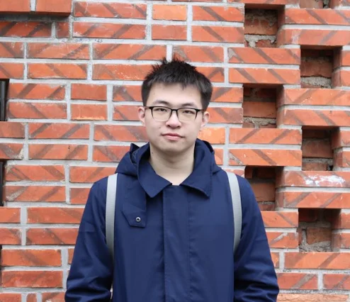

Ruiyang Ren

Ruiyang Ren is a Research Scientist at Nanyang Technological University, working with Prof. Chunyan Miao. He received his Ph.D. from Renmin University of China, advised by Prof. Wayne Xin Zhao, and was a visiting student at the NExT++ Research Center, National University of Singapore, working with Prof. Tat-Seng Chua. He received his M.E. from Renmin University of China, supervised by Prof. Ji-Rong Wen and Prof. Wayne Xin Zhao, and his B.E. in Computer Science and Technology from Taishan College (honor college), Shandong University, supervised by Prof. Xuemeng Song and Prof. Liqiang Nie. His research interests are information retrieval, large language models, and agents.
View publicationsExperiences
- Research Scientist, Nanyang Technological University Present Working with Prof. Chunyan Miao
- Research Intern, Wenxin, Baidu Jul 2025 – Jul 2026 Worked with Dr. Haifeng Wang and Jing Liu
- Visiting Student, NExT++ Research Centre, National University of Singapore Jul 2024 – Jan 2025 Worked with Prof. Tat-Seng Chua
- Research Intern, NLP Department, Baidu May 2020 – Jul 2024 Worked with Dr. Jing Liu
Selected Awards
- 2025JD Scholarship, Renmin University of China
- 2023Outstanding Innovative Talents Cultivation Funded Programs, Renmin University of China
- 2021Academic Rising Star candidate, Renmin University of China
- 2020National Scholarship for Graduate Students of China (Highest National Scholarship)
- 2020SIGIR Student Travel Grant
- 2013First Prize of National Olympiad in Informatics in Provinces (NOIP) in Hebei Province
Services
Area Chair
- ARR
Program Committee Member / Reviewer
- ACL, SIGIR, NeurIPS, KDD, WWW, TOIS, TMM, EMNLP, WSDM, CIKM, COLING, TASLP, TCSVT, TALLIP
Conference Volunteer
- CIKM 2019